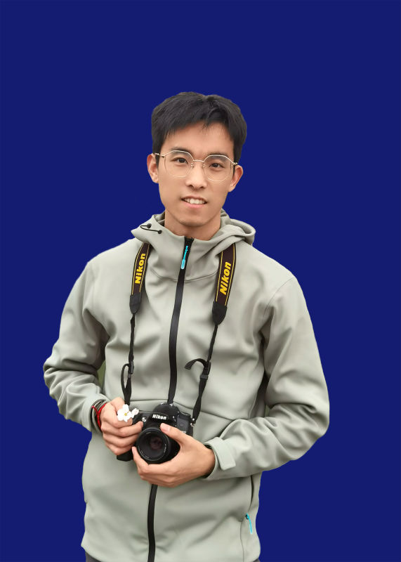
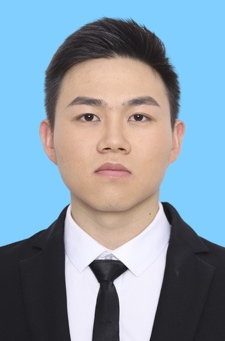
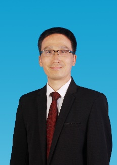

回到
授课教师
曹娟 厦门大学

孙文愈 中国船舶集团海舟系统技术有限公司

张寒 中国科学技术大学苏州高等研究院
汪国平 资料待补充

李新 中国科学技术大学数学科学学院
朱春钢 大连理工大学
课程题目： 为什么需要引入CAD/CAE 一体化？授课讲者： 曹娟，厦门大学讲者简介： 厦门大学数学科学学院教授、博士生导师。主要从事计算机辅助几何设计与图形学领域研究，包括复杂几何建模、等几何分析、高质量网格生成等。已在ACM TOG、IEEE TVCG、CMAME、CAD、CAGD等期刊上发表学术论文六十余篇，获SPM2018最佳论文一等奖、CAD2016最佳论文奖等多个奖项。主持国家自然科学基金面上项目、福建省杰出青年科学基金等国家、省市级科研项目和企业横向课题十余项目。担任计算机图形学与混合现实前沿研讨会（GAMES）常务委员、CCF计算机辅助设计与图形学专业委员会执行委员、CSIAM几何设计与计算专业委员会委员、CSIG三维视觉专业委员会及智能图形专业委员会委员、GDC2025程序委员会共同主席。
讲者主页： https://graphics.xmu.edu.cn/~juancao/
课程题目： 仿真驱动的几何优化设计及其CAD/CAE一体化问题授课讲者： 孙文愈，中国船舶集团海舟系统技术有限公司讲者简介： 博士，高级工程师，中国船舶集团海舟系统技术有限公司高级专家、学科带头人，中国船舶集团青年拔尖人才。主要从事计算几何、计算力学以及CAD/CAE工业软件的核心技术研究。主持或参与多项工信部、科技部项目，主持开发船体型线智能化设计软件、螺旋桨性能分析与优化设计软件、几何约束引擎、智能约束推断引擎等多项软件系统并实现工程应用。累计发表论文20篇，申请发明专利26项。
课程题目： CAE智能体赋能下一代工业软件建设授课讲者： 张寒，中国科学技术大学苏州高等研究院讲者简介： 长期从事复杂流场建模与气动弹性力学数值模拟，以及高性能CAE工业软件等方面的研究，先后主持国家自然科学基金青年基金、江苏省基础研究计划青年基金、江苏省青年科技人才托举工程及香港理工大学博士后基金等科研项目，在领域权威期刊发表SCI/EI论文22篇，授权国家发明专利6项，作国际会议特邀报告5次。获中国振动工程学会高水平博士学位论文、日内瓦国际发明展专利金奖、江苏省行业领域十大科技进展等荣誉。
讲者主页： https://faculty.ustc.edu.cn/zhanghan12/zh_CN/
课程题目： 自适应离散造型系统中的智能逆向细分方法授课讲者： 汪国平讲者简介： 资料待补充
课程题目： 基于拓展体素单元的CAD/CAE一体化技术研究授课讲者： 李明讲者简介： 资料待补充
课程题目： 等几何分析概览授课讲者： 徐岗讲者简介： 资料待补充
课程题目： 基于隐式表达的CAD/CAE一体化技术研究授课讲者： 王胜法，大连理工大学讲者简介： 大连理工大学软件学院副教授，博士生导师。2012年于大连理工大学数学科学学院获得博士学位。主要研究方向为计算几何、结构设计与优化、网格生成，以及3D打印与相关应用。近年来在TVCG、AM、SIGGRAPH/Asia、CAD等顶级期刊和会议发表论文三十余篇，获专利二十余项。主持和参与多项国家自然科学基金，包括重点项目、重点研发计划、国际合作重点项目、面上项目等。入选大连理工大学首批“星海学者”人才培育计划、大连市“科技之星”，获ACM中国新星奖（大连分会）、高等学校虚拟仿真实验教学资源建设成果三等奖、广西科学技术进步二等奖。
讲者主页： https://faculty.dlut.edu.cn/sfwang/zh_CN/index.htm
课程题目： 基于Walk on Spheres的CAD物理感知前置探索授课讲者： 方清，中国科学技术大学讲者简介： 中国科学技术大学数学科学学院特任副研究员，入选小米青年学者。本科、博士均毕业于中国科学技术大学。主要研究方向为参数化与网格生成、点云重建以及无网格法PDE数值求解等，在ACM Transactions on Graphics、TVCG上发表论文近10篇。
讲者主页： https://qingfang1208.github.io
课程题目： 适合分析的T样条的定义与数学性质授课讲者： 李新，中国科学技术大学数学科学学院讲者简介： 中国科学技术大学数学科学学院教授、博士生导师。2008年获得中国科学技术大学博士学位并于同年在该校数学科学学院工作至今。先后获得全国优秀博士学位论文、安徽省自然科学一等奖、中国工业与应用数学学会青年学者奖、中国科学院青年创新促进会优秀会员等荣誉。主要研究领域为计算机辅助设计、等几何分析，尤其关注设计分析一体化的底层理论和算法；在研或完成国家自然科学基金重大、重点、面上项目以及973计划、军科委、中国科学院先导专项、国家重点研发计划等多个项目，相关成果已在多家国内外企业中得到直接应用。
课程题目： 面向等几何分析的区域参数化方法授课讲者： 朱春钢，大连理工大学讲者简介： 大连理工大学数学科学学院教授、博士生导师。2000年于山东大学获得学士学位，2005年于大连理工大学获得博士学位并留校工作至今。主要从事计算几何、计算机辅助几何设计和等几何分析等方向的研究工作，在ACM TOG、CMAME、CAGD、CAD等期刊发表学术论文百余篇，出版教材两部，主持多项国家自然科学基金项目，获得CAD/Graphics 2021、GDC 2022/2025/2026最佳论文和辽宁省优秀研究生导师称号。曾任中国工业与应用数学学会（CSIAM）第七、八届常务理事。
讲者主页： https://faculty.dlut.edu.cn/zhu/
课程题目： 面向等几何分析的快速矩阵组装与求解技术授课讲者： 潘茂东，南京航空航天大学讲者简介： 南京航空航天大学教授、博士生导师，研究方向为计算几何及CAD/CAE一体化。主持国家重点研发计划青年科学家项目、国家自然科学基金面上项目等科研项目。入选CSIAM几何设计与计算专业委员会“优秀青年学者激励计划”、江苏省高层次人才计划。在CMAME、IJNME、IEEE TVCG、CAD、CAGD等领域旗舰期刊上发表多篇论文，出版学术专著1部。
讲者主页： https://panmd.github.io/
课程题目： 基于渐进迭代的等几何最小二乘配点法：理论分析、加速和应用授课讲者： 蔺宏伟，浙江大学讲者简介： 浙江大学教授、博士生导师。1996年于浙江大学应用数学系获学士学位，2004年于浙江大学数学系获博士学位。自2004年至今，在浙江大学数学科学学院及CAD&CG国家重点实验室工作。主持或参与国家自然科学基金、国家重点研发计划等项目若干项。近年来从事计算机辅助几何设计、计算机辅助拓扑设计、量子图形学等方面的研究工作，发表或录用论文百余篇。曾获陆增镛CAD&CG高科技一等奖、国家自然科学奖二等奖、EPSON Award for Outstanding Oversea Researcher等学术荣誉。
讲者主页： https://person.zju.edu.cn/hwlin
课程题目： 细分表示在等几何分析中的实现与应用授课讲者： 康红梅，苏州大学讲者简介： 苏州大学数学科学学院副教授，获江苏省“双创博士”项目支持。2016年至2017年在意大利国家研究所CNR-IMATI跟随欧洲科学院院士Annalisa Buffa从事博士后研究。主要研究领域为计算机辅助几何设计、等几何分析、CAD/CAE一体化等。在本专业国内外学术期刊发表论文20余篇，主持国家自然科学基金项目2项和江苏省自然科学基金项目1项，参与国家重点研发计划青年科学家项目1项。
讲者主页： https://web.suda.edu.cn/khm/
课程题目： 面向CAD和CAE一体化的共形嵌入域等几何分析授课讲者： 祝雪峰，大连理工大学讲者简介： 大连理工大学教授、博士生导师，国家重点研发计划首席科学家、大连市领军人才，担任中国力学学会产学研工作委员会等多家专业委员会委员。研究方向包括CAD和CAE一体化、等几何分析、工业软件、智算力学、AI智能体仿真方法等，提出B++样条和共形嵌入域等几何分析等系列原创理论。先后主持国家重点研发计划项目、某部委重点项目、国家自然科学基金项目等20余项，发表期刊论文80余篇，出版专著2部。自主研发国产CAD和CAE融合等几何分析工业软件ADIGA，并在沈飞、中车、一汽等多家单位应用。
讲者主页： https://www.xuefengzhu.com
课程题目： 薄壁结构等几何计算与形状优化授课讲者： 杜孝孝，北京航空航天大学讲者简介： 北京航空航天大学机械工程及自动化学院副教授、博士生导师，主要从事数字化设计制造技术相关研究工作，入选中国科协青年人才托举工程。主持或参与国家自然科学基金项目、北京市自然科学基金项目、国家重点研发计划课题、工信部重大科技专项课题、装发预研项目等。发表学术论文50余篇，编著教材1部，获国际几何与图学学会青年学者提名奖、中国航空学会科技进步一等奖、中国图学学会优秀博士学位论文奖、CAD国际学术会议最佳论文奖、工信部工程硕博士精品教材。担任《图学学报》、The Visual Computer期刊编委，以及中国图学学会数字孪生专业委员会、可视化与认知计算专业委员会委员。
讲者主页： https://shi.buaa.edu.cn/duxiaoxiao1/zh_CN/